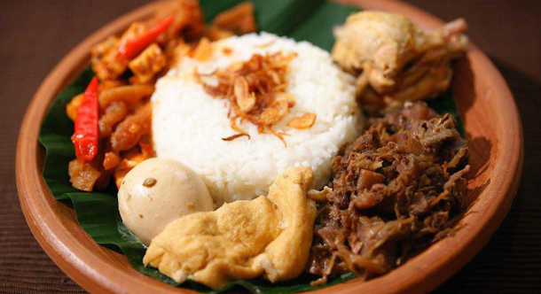
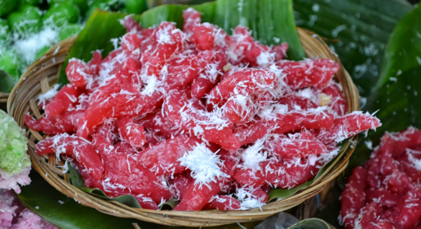
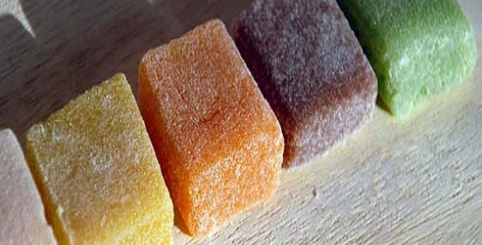
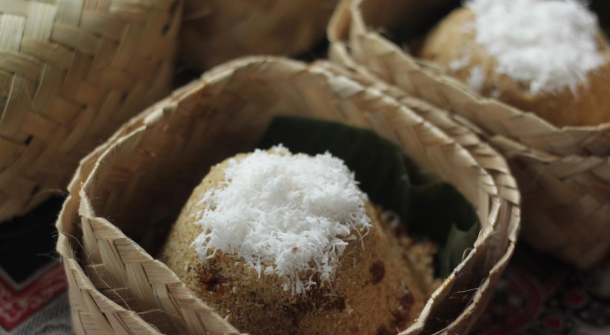

Apa yang anda cari? What are you looking for?

Gudeg
Gudeg adalah makanan khas Provinsi Yogyakarta dan Jawa Tengah yang terbuat dari nangka muda yang dimasak dengan santan. Perlu waktu berjam-jam untuk membuat masakan ini. Warna coklat biasanya dihasilkan oleh daun jati yang dimasak bersamaan.
Gudeg is a typical food of Yogyakarta and Central Java Province made from young jackfruit cooked with coconut milk. It takes hours to make this dish. The brown color is usually produced by teak leaves that are cooked together.
HargaPrice
Rp 15000 - 130000
KomposisiComposition
Nasi, Telur, Krecek, Aneka Sayur, Gorengan
Rice, Egg, Crackle, Assorted Vegetables, Fried Food


Bakpia
Bakpia pathok adalah salah satu oleh-oleh yang paling diminati wisatawan ketika berkunjung ke Yogyakarta. Kue ini berbentuk bulat pipih, yang berisi campuran kacang hijau dengan gula. Kue ini sebenarnya tidak asli berasal dari Yogyakarta, melainkan daratan Tiongkok.
Bakpia pathok is one of the most popular souvenirs for tourists when visiting Yogyakarta. This cake is round and flat, which contains a mixture of green beans and sugar. This cake is actually not originally from Yogyakarta, but mainland China.
HargaPrice
Rp 25000 - 37400
KomposisiComposition
Gula, Tepung, Kacang Hijau

Cenil
Cenil atau cetil adalah makanan yang terbuat dari pati ketela pohon. Makanan ini bisa dibentuk bulat-bulat kecil atau kotak kemudian diberi warna sesuai selera sebelum direbus.
Cenil or cetil is a food made from cassava starch. This food can be shaped into small rounds or squares and then colored according to taste before boiling.
HargaPrice
Rp 5500 - 55000
KomposisiComposition
Tepung tapioka, Parutan Kelapa, Gula
Tapioca Flour, Grated Coconut, Sugar

Yangko
Makanan khas kota Yogyakarta yang terbuat dari tepung ketan. Yangko berbentuk kotak dengan baluran tepung ketan, kenyal, dan rasanya manis. Kini yangko juga memiliki rasa buah-buahan, seperti strawberry, durian, dan melon. Yangko banyak ditemui di daerah Kotagede, Yogyakarta
A typical food of the city of Yogyakarta made from glutinous rice flour. Yangko is square in shape with glutinous rice flour, chewy, and tastes sweet. Now Yangko also has fruit flavors, such as strawberry, durian, and melon. Yangko are often found in the Kotagede area, Yogyakarta
HargaPrice
Rp 17000 - 29900
KomposisiComposition
Tepung ketan, Gula Pasir, Essens
Glutinous Flour, Sugar, Essence

Thiwul
Tiwul dipercaya mencegah penyakit maag, perut keroncongan, dan lain sebagainya. Tiwul pernah digunakan untuk makanan pokok sebagian penduduk Indonesia pada masa penjajahan Jepang
Tiwul is believed to prevent ulcer disease, stomach rumbling, and so on. Tiwul was once used as a staple food for some Indonesians during the Japanese colonial period
HargaPrice
Rp 7000 - 20000
KomposisiComposition
Singkong, Gula merah, Kelapa parut, Daun pandan
Cassava, Brown sugar, Grated coconut, Pandan leaves